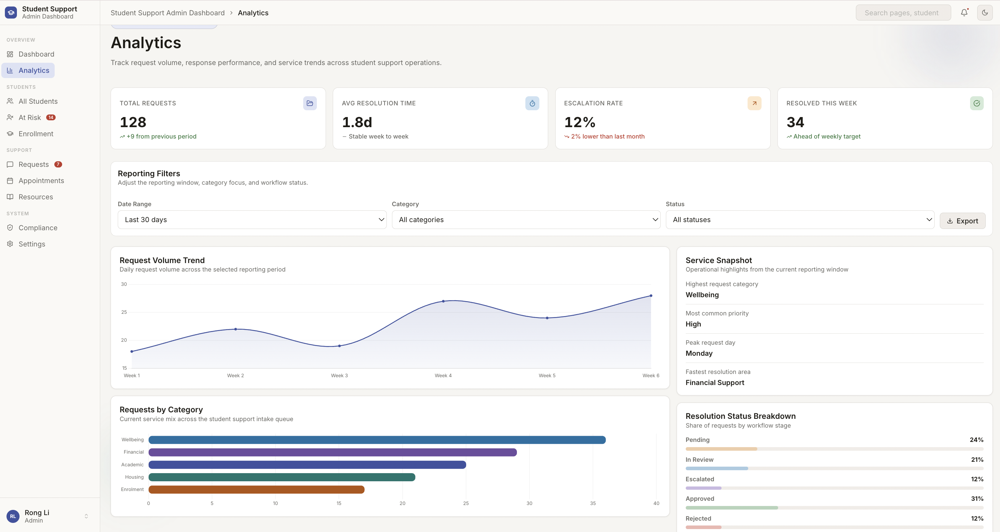
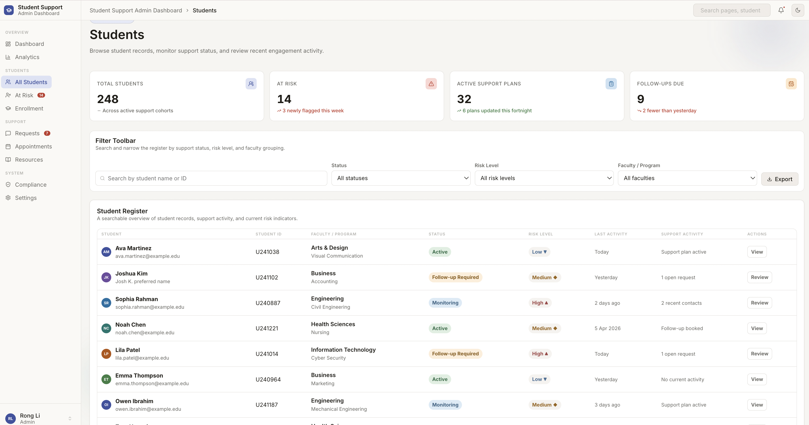
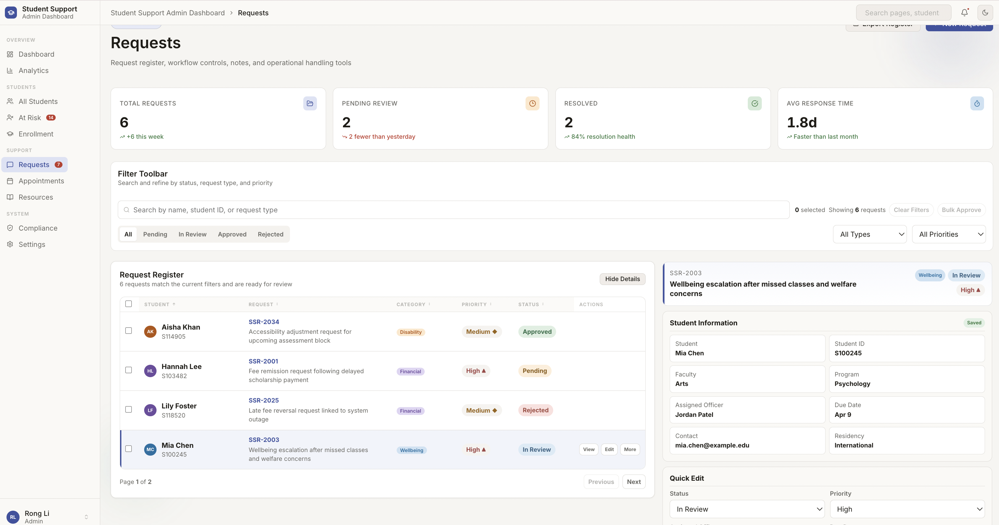
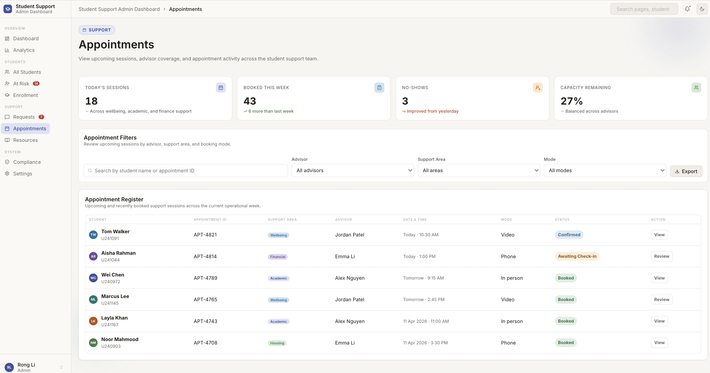

Operational Dashboard
High-level overview of enrolled students, active cases, at-risk students, and resolution rate, paired with trend and distribution charts plus quick actions like export and new case creation.
Case Study · Internal Systems / Administration
Internal Operations Dashboard
An internal student services dashboard designed around the exact workflow shown in the live prototype: operational overview, analytics, student records, at-risk monitoring, requests, appointments, resources, compliance, and settings inside one university-style support system.

Context
Student support teams often work across multiple service categories at once, balancing incoming cases, appointment coordination, risk monitoring, student records, compliance tasks, and service reporting. When these workflows live in separate tools, staff lose time switching context and it becomes harder to see what needs attention first.
This project was created to show a more unified internal system: one place where staff can scan overall service performance, review student and risk data, move through requests, coordinate appointments, and access supporting resources or compliance information.
The Problem
The Solution
The Student Support Admin Dashboard was designed as a multi-page internal system for student services. The live prototype brings together the exact areas visible in the current build: Dashboard, Analytics, All Students, At Risk, Requests, Appointments, Resources, Compliance, and Settings.
Rather than treating reporting and operations as separate products, the system connects summary metrics, trend analysis, student-level views, request management, appointment coordination, and administrative configuration in one consistent interface.
Key Features
High-level overview of enrolled students, active cases, at-risk students, and resolution rate, paired with trend and distribution charts plus quick actions like export and new case creation.
Dedicated analytics screens turn service activity into readable KPIs, category breakdowns, and reporting views that help teams understand performance trends over time.
All Students and At Risk pages extend the dashboard beyond case counts, giving staff clearer visibility into student records, flagged cohorts, and early intervention priorities.
The request handling area supports queue management, filtering, ownership visibility, due dates, notes, and structured follow-up inside a dedicated casework surface.
Appointments, resources, compliance, and settings show how the same system can support coordination, supporting materials, policy review, and administrative maintenance without breaking consistency.
Workflow Design
The workflow now reflects the broader system shown in the prototype: staff start with an overview, move into reporting or risk monitoring, open student and request records, then continue into scheduling, compliance, and configuration as needed.
Design Approach
The interface prioritises quick scanning, clear hierarchy, and low-friction movement between operational overview and detailed tasks. The left navigation keeps the system structure obvious, while each page uses the same visual language so staff can move between dashboards, records, and actions without relearning the interface.
Content is organised to help staff understand what needs attention, where demand is increasing, which students or requests require intervention, and what actions are available on each page.
Primary Screen
Supporting Views
The main dashboard gives teams a quick operational read on service demand, active cases, resolution rate, and at-risk students before they move into detailed casework.
The analytics view turns service activity into a more readable performance layer, helping teams spot demand changes, resolution patterns, and category-level pressure over time.

This view shifts the focus from individual requests to the student population, giving staff a broader record view that supports service context and cohort scanning.

The at-risk screen helps surface students who may need early intervention, making risk visibility part of the same internal workflow rather than a separate reporting process.

The requests view supports detailed case handling with queue management, ownership visibility, filtering, and structured follow-up inside the operational system.

The appointments screen extends the system into scheduling, helping teams connect service coordination with the casework and support demand shown elsewhere in the dashboard.

What This Project Demonstrates
Ability to design for both operational oversight and detailed casework within the same internal product.
Experience presenting service metrics, trend data, and category distribution in a way that supports quick operational reading.
Ability to connect student records, risk monitoring, and intervention-focused screens within the same product structure.
Experience shaping request handling, appointment coordination, and administrative follow-up into a coherent internal workflow.
Tools Used
Reflection
Designing for an internal system shifts the focus from promotion to process. This project reinforced how important it is to make a broad operational system feel understandable: the dashboard has to communicate service health quickly, while the surrounding pages still need to support records, interventions, requests, appointments, compliance, and admin tasks without becoming visually heavy.